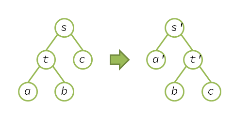

 \[ A(s) = T(s) + \Phi(s') - \Phi(s) \] For \(T(s) = 1 + T(u)\), \[ = 1 + T(a) + \Phi(s') - \Phi(s) \] \[ = 1 + A(a) - \Phi(a') + \Phi(a) + \Phi(s') - \Phi(s) \] \[ = 1 + A(a) - \Phi(a') + \Phi(a) + (\phi(s') + \phi(t') + \Phi(a') + \Phi(b) + \Phi(c)) - (\phi(s) + \phi(t) + \Phi(a) + \Phi(b) + \Phi(c)) \] \[ = 1 + A(a) + \phi(s') + \phi(t') - \phi(s) - \phi(t) \] \[ \leq 2 + 2\phi(a) + \phi(s') + \phi(t') - \phi(s) - \phi(t) \] For \(\phi(a) < \phi(t), \phi(s') < \phi(s)\), \[ < 2 + \phi(a) + \phi(t') \] For \(\#a + \#t' = \#s\) and Lemma 5, \[ < 1 + 2\phi(s) \]